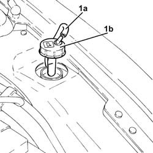

0010T47 hydraulic system fluid for gearbox with hydraulic selection check level and top up if necessary
- Path
- Procedures > 00 MAINTENANCE > 0010 NEW UNITS AND PLANNED MAINTENANCE'. > 0010T vehicle oil and fluids > 0010T47 hydraulic system fluid for gearbox with hydraulic selection check level and top up if necessary
- Kind
- repair procedure (removal / refitting; the operation number is the code)
- Applies to
- engines: 2.0 TS, 3.2 V6; all production periods
- Interactive page
- https://sloeber94.github.io/elrnDB-a147/en/#/3024725
Applies to: engines: 2.0 TS; all production periods; only with equipment: Cambio robotizzato
Applies to: engines: 3.2 V6; all production periods; only with equipment: Cambio robotizzato
.
Turn the ignition key to the ON position.
1. Detach the breather pipe (1a), remove the cap (1b) and check that the level is at the MAX reference on the dipstick on the actual cap.

Applies to: engines: 3.2 V6; all production periods; only with equipment: Cambio robotizzato
If the level is below the MAX mark, add fluid until the level is correct.
 | Type | Component | Name | Qty. |
|---|---|---|---|---|
- | Fluid [l] | HYDRAULIC GEARBOX HYDRAULIC SYSTEM | TUTELA CAR CS SPEED | 0.6 |
Retighten the cap and fully insert the breather pipe into the cap beak.
Turn the ignition to the OFF position.
Topics linked from this page (1)
Topics that link to this page (24)
- 1020D36 flywheel end oil seal - replace for manual gearbox with hydraulic selection versions
- 1024B11 engine flywheel - r r for manual gearbox with hydraulic selection versions
- 1810A28 clutch - r r for manual gearbox with hydraulic selection versions
- 2110A11 manual gearbox with differential - r r for versions with hydraulic selection
- 2127C10 support for hydraulic circuit reservoir and system pump - r r
- 2127C12 hydraulic gear selection fluid reservoir - r r
- 2127C18 pipe from hydraulic circuit fluid reservoir to hydraulic speed selection drive pump - r r
- 2127C20 pipe frompump to hydraulic speed selection actuator unit - r r
- 2127C22 pipe from hydraulic speed selection actuator unit to fluid reservoir - r r
- 2127C25 PIPE FROM SELECTION SOLENOID VALVE TO ENGAGEMENT/SELECTION ACTUATOR - R.R.
- 2127C26 PIPE FROM ODD GEARS ENGAGEMENT SOLENOID VALVE TO SELECTOR/ENGAGEMENT ACTUATOR - R.R.
- 2127C27 PIPE FROM GEAR ENGAGEMENT SOLENOID VALVE TO ENGAGEMENT/SELECTOR ACTUATOR - R.R.
- 2127C28 PIPE FROM CLUTCH ENGAGEMENT SOLENOID VALVE TO CLUTCH HYDRAULIC ACTUATOR - R.R.
- 2127C30 hydraulic speed selection system pump - r r
- 2127C40 hydraulic speed selection hydraulic actuator unit and clutch - r r
- 2127C44 pressure accumulator on hydraulic actuator unit - r r
- 2127C45 CLUTCH OPERATING CYLINDER, of electrohydraulic selection - R.R .
- 2127C48 GEAR ENGAGEMENT ELECTRO-HYDRAULIC SELECTION DEVICE - R.R.
- 2127C52 EVEN AND UNEVEN GEAR ENGAGEMENT SOLENOID VALVES - R.R.
- 2127C54 GEAR SELECTOR SOLENOID VALVES - R.R .
- 2127C56 CLUTCH SOLENOID VALVE - R.R.
- 2127E40 hydraulic selection gearbox speed selection position sensor - r r
- 2127E42 hydraulic selection gearbox shift position sensor - r r
- 2127E50 hydraulic selection gearbox circuit pressure sensor - r r